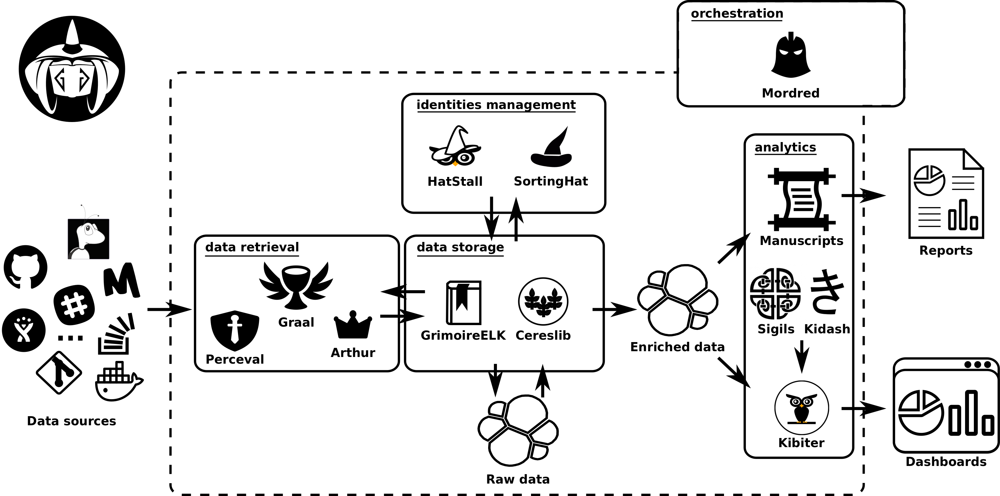

The aim of this project is to provide an open source toolkit for:
- Automatic and incremental data gathering from almost any tool (data source) related with contributing to Open Source development (source code management, issue tracking systems, forums, etc.)
- Automatic gathered data enrichment, merging duplicated identities, adding additional information about contributors affiliation, calculation delays, geographical data, etc.
- Data consumption and visualization, allowing filtering by time range, project, repository, contributor, etc.
